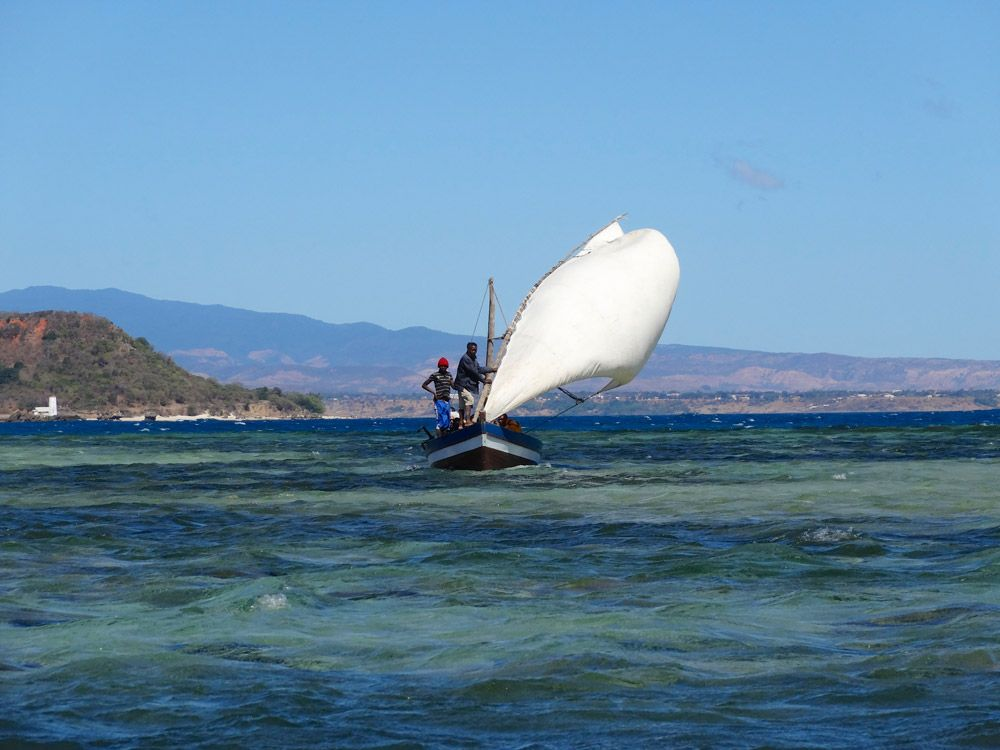

Itinéraire de voyage : En route pour le Nord de Madagascar – MG 121
Un voyage à Madagascar à travers l’espace et le temps – 21 jours
Le Nord de Madagascar est la destination ultime de cet intense voyage de 20 jours…

Baie Andovobazaha près de la plage de Ramena
Ce circuit, qui commence dans la capitale Antananarivo au cœur de Madagascar, va nous permettre d’apprécier toute la diversité de cette magnifique île-continent…
Nous prenons la route pour traverser d’immenses savanes de hautes herbes et de palmiers, découvrir la forêt sèche de l’Ouest et ses lémuriens endémiques, visiter une étonnante île-prison tant redoutée dans le passé…
Puis nous traversons une forêt de montagne étonnamment fraîche et admirons l’étrange paysage de pierres des Tsingy rouges. Et pour terminer, détente et émerveillement en bord de mer, dans les fameuses baies du Nord de Madagascar…
L’essentiel de ce circuit En route pour le Nord de Madagascar :
- Tsingy Rouge et Tsingy de l’Ankarana
- Découvrir la nature d’une forêt de montagne tropicale
- Forêt tropicale et forêt sèche
- Visite de l’île-prison de Nosy Lava
- Et tant d’autres découvertes passionnantes tout au long du trajet…
Ce circuit est réalisable d’avril à décembre.
Téléchargez ici notre proposition de circuit et prenez contact avec Carole, notre collaboratrice pour la Suisse romande, qui se réjouit de vous renseigner.
Naturellement, cette proposition de circuit peut être adaptée à vos souhaits ou combinée avec d’autres itinéraires. Chaque voyage est planifié et organisé en étroite concertation avec vous. Contactez-nous à tout moment pour plus d’informations, planifier votre voyage ou pour toute question concernant Madagascar.